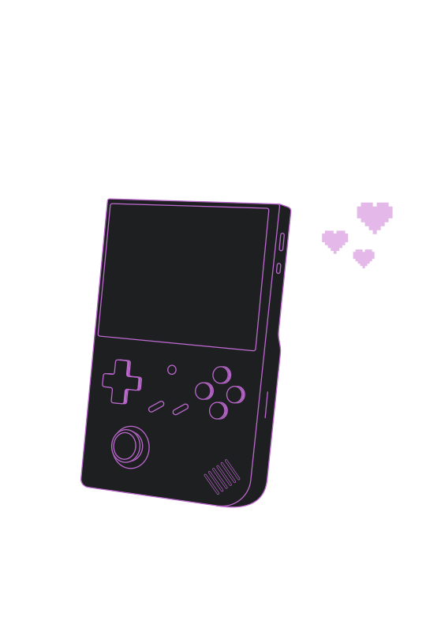
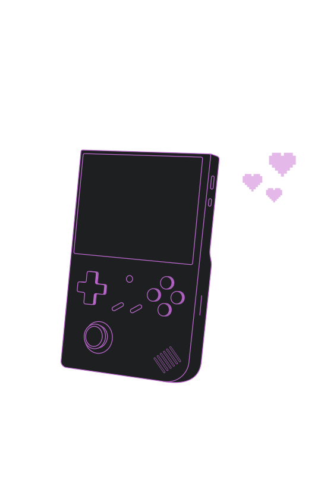
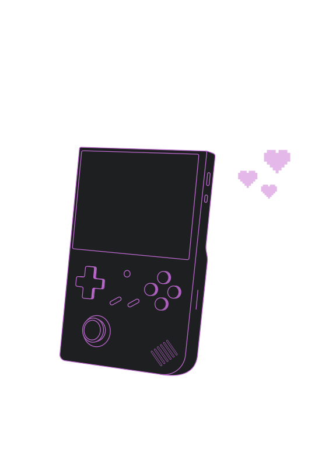
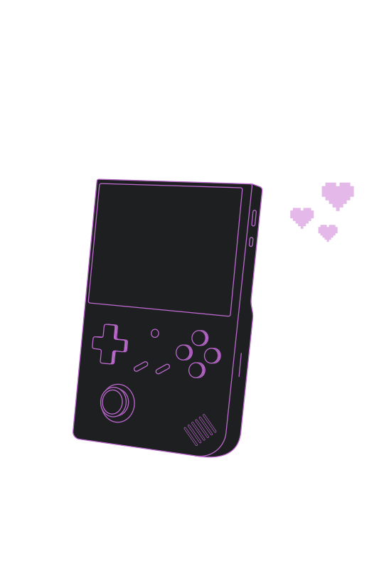

Get ready to power up with the Lumio 64! For a limited time, enjoy 15% off your purchase of this premium retro gaming device. Don’t miss the chance to experience iconic games with cutting-edge performance and sleek design—at an exclusive launch price. Offer ends soon!
20% OFF
Inspired by the ever-loved consoles of yesteryear, the Lumio 64 offers a similar compact and curved shape, both familiar and inviting, making it the perfect nostalgic portable console for any collector gamer’s setup.


Together with it’s intuitive layout, the classic ergonomic button layout that mimics the regular controller feel, with a d-pad and a joystick, evokes the sense of nostalgia as you play, even more so for long durations.
The Lumio 64 joystick features dynamic RGB lighting, inducing a modern twist to its retro-inspired design. With many color options to choose from, the joystick can glow in any hue you choose, allowing you to match your style. It’s not just a control—it’s a statement that brings a vibrant energy and changes your entire gaming experience.


Enhanced with contemporary technology, the Lumio 64 is equipped with high-quality performance. For playablity, four strategically placed rear buttons, two on each side, seamlessly merging the retro design with the modern ergonomics, adding versatility to gameplay and making every action responsive and accurate with the use of these buttons.

A deep, translucent black that recalls classic electronics, Smoky Black brings a timeless, vintage vibe to Lumio 64, grounding its look with a sleek, sophisticated touch.
With its warm, off-white tone, Vintage White creates the look of the retro tech. It adds a nostalgic charm and approachable feel, reminiscent of classic gaming devices.
Electric Purple is a bold, energetic shade that pops against the retro base colors. It portrays a playful, neon-inspired glow that captures the adventurous feel of classic gaming.
S$71.10
Take a step back into the retro world with Lumio 64. From pixel-perfect platformers to action titles, Lumio 64 offers a nostalgic library to your fingertips, with seamless gameplay and clear visuals that stay true to the original.

With over 20 emulators available, 15000+ classic games are at your fingertips. Lumio 64 is the gateway to the greatest titles played. Everything you need for hours of nostalgic gameplay is here. Dive in and explore the library to find your favourites.
Take a step back into the retro world with Lumio 64. From pixel-perfect platformers to action titles, Lumio 64 offers a nostalgic library to your fingertips, with seamless gameplay and clear visuals that stay true to the original.


Play with crystal-clear visibility in any lighting condition, whether you’re in indoors or out. Combined with a high, consistent frame rate, even the most action-based scenes stay smooth and enjoyable, delivering a perfect retro gaming experience.
Enjoy every detail in sharp, HD quality that brings retro games to life. The colours are accurate in staying faithful to the classic graphics. Optimized for retro gaming, the 4:3 screen ratio ensure that the original look and enjoyment of classic games are displayed the way they are meant to be experienced, pure nostalgia in its most authentic form.

Engineered for a seamless gameplay, the Lumio 64 has the ability to offer classic games a smooth, delay-free performance. Optimized to handle many retro titles, its efficient processing ensures every game runs with no slowdowns.


Powered by a dual-core G31 MP2 graphics processor, the Lumio 64 has the capability to run smooth visuals and responsive gameplay, making all games it run efficiently while looking sharp.

Equipped with 1GB of LPDDR4 memory, the Lumio 64 can save and load with quick times and fluid transitions, making every game experience seamless and lag-free.

With up to 64GB of expandable storage with TF/Micro SD, there is ample space for a whole collection of games, making it possible to carry thousands of titles in one single device.

With 32000mAh, the Lumio 64 has one of the longest lasting battery life as a retro pocket, offering up to 6 lasting hours when fully charged.

Stay connected with the reliable dual band 2.4/5G WIFI, designed for smooth online battles. With fast speeds and low latency, battle anyone around the world making every match feel as responsive as local play

Enjoy the power of Bluetooth 4.2, allowing you to stream both audio and gameplay seamlessly to devices that are compatible. Whether it be wireless headphones or sharing screen for your gameplay, the Bluetooth 4.2 adds versatility to your experience.

Smoky Black, Electric Purple, Vintage White
4.0-inch IPS screen, OCA full lamination, resolution: 640*480
H700 quad-core ARM Cortex-A53, 1.5GHz frequency
Dual-Core G31 MP2
LPDDR4 1GB
64GB TF/MicroSD
Linux 64-bit
High-fidelity speaker
2.4/5G WIFI 802.11a/b/g/n/ac
Bluetooth 4.2
Li-polymer battery 3200mAh, lasting 6 hours
Dual card slots, support TF card expansion, maximum 512GB
2.4 G wireless controller and wired controller connection, HD connection to monitor, file manager, expert mode, WIFI online pairing, streaming, vibration Supports music player with formats such as FLAC, MP3, WAV, APE, AIF, AIFF, OGG, WMA, AAC, M4A, M4R, file manager, expert mode, e-book reader (supports TXT format).
From their sleek, portable design to its stunning screen quality and extensive retro game support, our Pyxel Collection has earned high marks for delivering an authentic gaming experience. These are genuine insights, compiled from top reviewers, spotlighting why our Pyxel Collection is a must-have for both casual and dedicated retro gamers. Dive into the praise and see why this device is celebrated as a perfect blend of nostalgia and modern functionality.

With custom firmware support, this device goes from good to great. It’s amazing how easily you can tweak it to suit exactly what you want from a retro console, making it ideal for both new fans and veteran gamers alike.

VladNerd
Gaming Hardware Specialist
The 4-inch IPS screen is a game-changer in clarity and comfort, making every game pop with that perfect retro vibe. It’s not just bigger; it’s crisp and beautifully suited for all kinds of classic titles

Creative4Gaming
Content Creator and Game Reviewer
With its ultra-narrow bezel and sharp 4-inch IPS screen, this device gives off that perfect retro vibe. It's a real blast for fans of vertical handhelds, though the rapid product releases by Pyxels might make it harder for owners to keep up with all the update.

RetroDodo
Retro Gaming Blog
Pyxels really hit it out of the park with this design. It's like a tribute to classic handhelds but with modern features, giving you the best of both worlds in a portable, durable package.

Retro Game Corps
Retro Gaming Expert
The display on this device is phenomenal—it’s an amazing 4” screen that really enhances the handheld experience. The RGB lighting around the analog stick just adds that extra touch that makes it feel customizable and modern.

DroiX
Retro Gaming Store Owner
I find the Lumio 64 to be an impressive device. Its portability and ease of use really stand out to me, and the performance is solid overall. I especially appreciate the quality display and ergonomic design, which makes it perfect for retro gaming. It feels like the ideal choice for anyone into classic games.

Retro Handhelds
Retro Gaming Reviewer
With custom firmware support, this device goes from good to great. It’s amazing how easily you can tweak it to suit exactly what you want from a retro console, making it ideal for both new fans and veteran gamers alike.
VladNerd
Gaming Hardware Specialist
The 4-inch IPS screen is a game-changer in clarity and comfort, making every game pop with that perfect retro vibe. It’s not just bigger; it’s crisp and beautifully suited for all kinds of classic titles
Creative4Gaming
Content Creator and Game Reviewer
With its ultra-narrow bezel and sharp 4-inch IPS screen, this device gives off that perfect retro vibe. It's a real blast for fans of vertical handhelds, though the rapid product releases by Pyxels might make it harder for owners to keep up with all the update.
RetroDodo
Retro Gaming Blog
Pyxels really hit it out of the park with this design. It's like a tribute to classic handhelds but with modern features, giving you the best of both worlds in a portable, durable package.
Retro Game Corps
Retro Gaming Expert
The display on this device is phenomenal—it’s an amazing 4” screen that really enhances the handheld experience. The RGB lighting around the analog stick just adds that extra touch that makes it feel customizable and modern.
DroiX
Retro Gaming Store Owner
I find the Lumio 64 to be an impressive device. Its portability and ease of use really stand out to me, and the performance is solid overall. I especially appreciate the quality display and ergonomic design, which makes it perfect for retro gaming. It feels like the ideal choice for anyone into classic games.
Retro Handhelds
Retro Gaming Reviewer